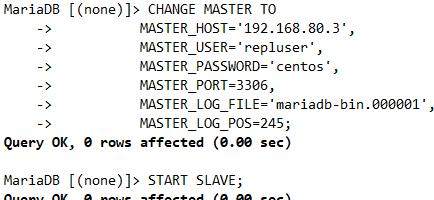
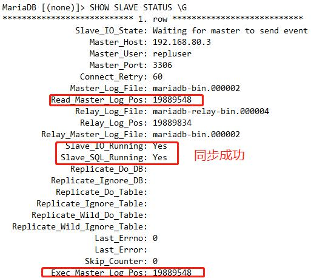
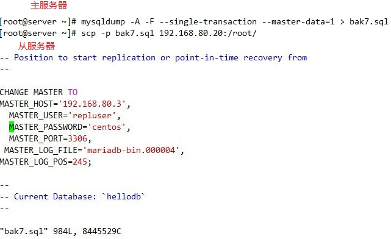
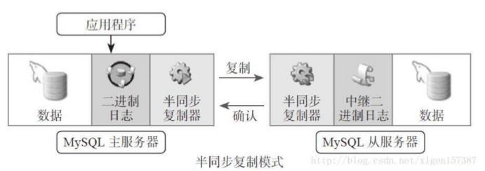

MySQL扩展方式
1. 横向扩展
2. 纵向扩展
MySQL扩展
1. 读写分离，分开读服务器和写服务器
2. 复制:每个节点都有相同的数据集
向外扩展
二进制日志
单向
复制的功用：
数据分布
负载均衡读
备份
高可用和故障切换
MySQL升级测试
复制的架构
1. 一主一从
2. 一主多从
3. 一主一从，此从还有从服务器
4. 主主
5. 多主一从
6. 环状复制

主从复制原理
1. 主服务器收到用户的写数据库的操作，产生数据更新
2. 将更新操作写入bin log二进制日志中
3. 主服务器使用dump tread读出二进制日志的更新操作
4. 通过网络传输到从服务器，
5. 从服务器接收到后，从服务通过I/O thread将此更新的操作写入relay log中
6. 从服务器写入日志后，通过sql thread更新本机的数据库文件，完成数据主从服务器的数据库的同步
主从复制特点
异步复制
主从数据不一致较常见
复制需要考虑二进制日志事件记录格式
STATEMENT（5.0之前）
ROW（5.1之后，推荐）
MIXED
主从复制线程：
主节点：
dump Thread：为每个Slave的I/O Thread启动一个dump线程，用于向其发送binary log events
从节点：
I/O Thread：向Master请求二进制日志事件，并保存于中继日志中
SQL Thread：从中继日志中读取日志事件，在本地完成重放
跟复制功能相关的文件：
master.info：用于保存slave连接至master时的相关信息，例如账号、密码、服务器地址等
relay-log.info：保存在当前slave节点上已经复制的当前二进制日志和本地replay log日志的对应关系
主从复制的实现过程
[主从配置过程:官网]https://mariadb.com/kb/en/library/setting-up-replication/
https://dev.mysql.com/doc/refman/5.5/en/replication-configuration.html
主服务器
1. 启动二进制日志
[mysqld]
log-bin=/PATH/LOG_BIN_FILENAME
server-id=1
2. 主服务器授权复制账号
GRANT REPLICATION SLAVE ON *.* TO 'repluser'@'192.168.80.%' IDENTIFIED BY 'centos';
查看二进制文件及位置
show master logs;
从服务器
1. 启动中继日志
[mysqld]
relay-log=/PATH 可选，relay log的文件路径，默认值hostname-relay-bin
server-id=2 为当前节点设置一个全局惟的ID号
read_only=ON 设置数据库只读
relay_log_index=relay-log.index 可选，默认值hostname -relay-bin.index
2. 使用有复制权限的用户账号连接至主服务器，
mysql> CHANGE MASTER TO
MASTER_HOST='master_host_name',
MASTER_USER='replication_user_name',
MASTER_PASSWORD='replication_password',
MASTER_LOG_FILE='recorded_log_file_name',
MASTER_LOG_POS=recorded_log_position;
3.启动复制线程，后续自动启动
mysql > START SLAVE[I/O THERAD|SQL_THREAD];

查看从服务器状态及进程
SHOW SLAVE STATUS \G
show processlist\G

如果主服务器运行一段时间，产生了大量了数据，可通过以下方式配置并启动从服务器
1. 通过备份恢复数据至从服务器
mysqldump -A -F --single-transaction --master-data=1 > /PATH/Filename
2. 将此备份的数据复制到从服务器,复制起始位置为备份时，二进制日志文件及其POS
scp -p /PATH/FILENAME 'USER'@'SLAVE_HOST_IP':/PATH

3.更改my.cnf
server-id=# 为当前节点设置一个全局惟的ID号
read_only=ON
systemctl start mariadb.service
mysql < bak7.sql
mysql > START SLAVE
重置从服务器
RESET SLAVE，在从服务器清除master.info ，relay-log.info, relay log ，开始新的relay log，注意：需要先STOP SLAVE
RESET SLAVE ALL，清除所有从服务器上设置的主服务器同步信息如：PORT, HOST, USER和 PASSWORD等
一个主，两个从，主down机，将一个从作为新主
主从级联复制
master复制到slave，从在复制到另一个slave
如果要启用级联复制,需要在中间从服务器启用以下配置
[mysqld]
server-id=2
read_only=ON
log_bin
log_slave_updates
复制架构中应该注意的问题
低版本到高版本可以，但是高版本不能往低版本同步
binlog记录模式，例如：row 模式就比默认的语句要好
1. 限制从服务器为只读
注意：此设置对super权限用户无效
2. 当发生复制错误时从服务器忽略几个主服务器的复制事件，是个global变量
stop slave； #临时停止同步开关
set global sql_slave_skip_counter =N； #将同步指针向下移动N个
start slave；
3. 主从复制事务的安全
[]<https://mariadb.com/kb/en/library/server-system-variables/ >
在主服务器启用如下参数
sync_binlog=1 每次写后立即同步二进制日志到磁盘，性能差
如果用到的为InnoDB存储引擎:
innodb_flush_log_at_trx_commit=1 每次事务提交立即同步日志写磁盘
innodb_support_xa=on 默认值，分布式事务MariaDB10.3.0废除
sync_master_info=# #次事件后master.info同步到磁盘
在slave节点启用服务器选项：
skip_slave_start=ON 不自动启动slave
在slave节点启用参数：
sync_relay_log=# #次写后同步relay log到磁盘
sync_relay_log_info=# #次事务后同步relay-log.info到磁盘
主主复制的实现过程
互为主从
容易产生的问题：数据不一致；因此慎用
1. 主服务器启动二进制日志
[mysqld]
log-bin=/PATH/LOG_BIN_FILENAME
relay-log
server-id=1
auto_increment_offset=1 //起始点
auto_increment_increment=2 //增长幅度
2. 主服务器创建授权账号
GRANT REPLCATION SLAVE ON *.* TO 'repluser'@'HOST' IDENTIFIED BY 'replpass';
3. 另外一台主服务器启动二进制日志
[mysqld]
log-bin=/PATH/LOG_BIN_FILENAME
relay-log
server-id=2
auto_increment_offset=2
auto_increment_increment=2
4. 均把对方指定为主节点，并启动复制线程
另外一台主服务器启动复制进程
mysql> CHANGE MASTER TO MASTER_HOST='HOST' MASTER_USER='repluser' MASTER_PASSWORD='replpass' MASTER_LOG_FILE='MASTER_BIN' MASTER_LOG_POS=#;
mysql> START SLAVE;
主服务器启动复制进程
MySQL> CHANGE MASTER TO MASTER_HOST='HOST' MASTER_USER='repluser' MASTER_PASSWORD='replpass' MASTER_LOG_FILE='MASTER_BIN' MASTER_LOG_POS=#;
mysql> START SLAVE;
半同步复制
默认情况下，MySQL的复制功能是异步的，异步复制可以提供最佳的性能，主库把binlog日志发送给从库即结束，并不验证从库是否接收完毕。这意味着当主服务器或从服务器端发生故障时，有可能从服务器没有接收到主服务器发送过来的binlog日志，这就会造成主服务器和从服务器的数据不一致，甚至在恢 复时造成数据的丢失
只要一个从服务器复制成功，就返回给客户端操作成功

类似主从配置方法，原基础增加如下
查看插件
show plugins
1. 主服务器配置启动半同步插件
mysql> INSTALL PLUGIN rpl_semi_sync_master SONAME 'semisync_master.so';
mysql> SET GLOBAL rpl_semi_sync_master_enabled=1; 开启
mysql> SET GLOBAL rpl_semi_sync_master_timeout=1000;超时时长1s
[mysqld]
server-id=1
log-bin=/PATH/LOG_BIN_FILENAME
2. 从服务器启动半同步插件
mysql> INSTALL PLUGIN rpl_semi_sync_slave SONAME 'semisync_slave.so';
mysql> SET GLOBAL rpl_semi_sync_slave_enabled=1;
[mysqld]
server-id=2
read_only=ON
3. 在主服务器查看半同步的状态
mysql> SHOW GLOBAL VARIABLE LIKE '%semi%';
mysql> SHOW GLOBAL STATUS LIKE '%semi%';
复制过滤器
从节点只复制指定的数据库或数据表
实现方式
(1) 服务器选项：主服务器仅向二进制日志中记录与特定数据库相关的事件 注意：此项和binlog_format相关
[参看]https://mariadb.com/kb/en/library/mysqld-options/#-binlogignore-db
binlog_do_db= //数据库白名单列表，多个数据库需多行实现
binlog_ignore_db= //数据库黑名单列表
注意：这样实现方式会导致二进制还原将无法实现
(2) 从服务器SQL_THREAD在replay中继日志中的事件时，仅读取与特定数据库(特定表)相关的事件并应用于本地
问题：会造成网络及磁盘IO浪费
2. 从服务器实现复制过滤器选项，仅读取与特定数据库(特定表)相关的事件并应用于本地
注意：这样实现方式会导致网络和磁盘IO的浪费
replicate_do_db= 指定复制库的白名单
replicate_ignore_db= 指定复制库黑名单
replicate_do_table= 指定复制表的白名单
replicate_ignore_table= 指定复制表的黑名单
replicate_wild_do_table= test%.stu% 支持通配符
replicate_wild_ignore_table=